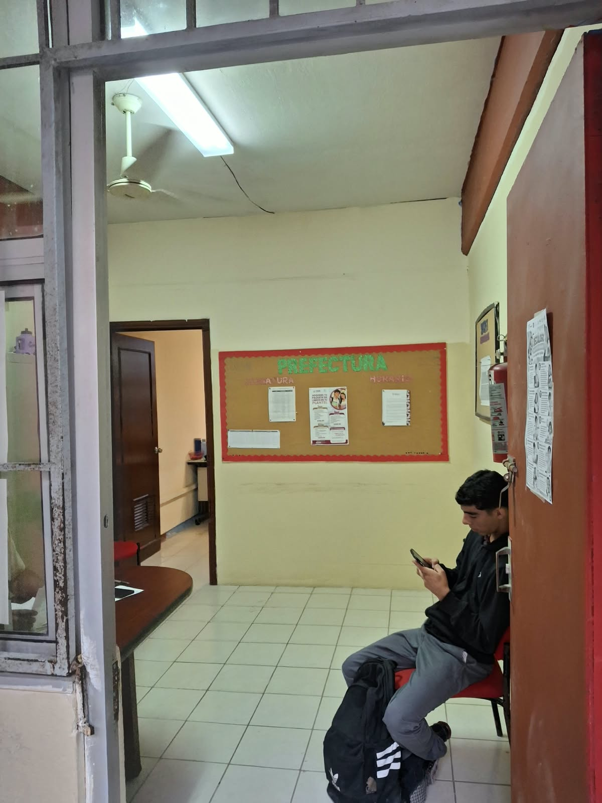

En este departamento podras encontrar a los prefectos, encargados de
controlar situaciones y mantener el orden de la escuela, al igual de verificar
que el reglamento escolar se cumpla, como el corte de cabello y la uniformidad.
Asi como es el area a donde va la gente que amerita reporte, citatorio o suspencion de alumnos
en donde se generara segun corresponda.

Prefectura escolar.